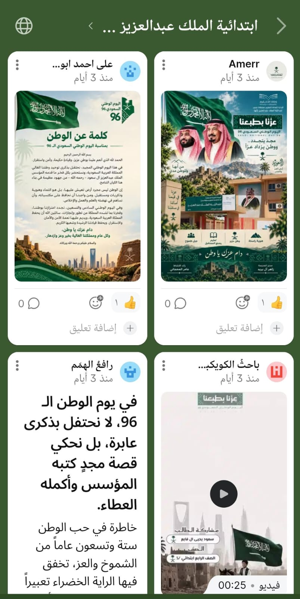

شواهد التفاعل
نماذج موثقة للمشاركة والتواصل مع أولياء الأمور
التفاعل مع أولياء الأمور والمجتمع المدرسي
شاهد يوثق التفاعل والمشاركة مع منشورات وفعاليات المدرسة بمناسبة اليوم الوطني السعودي 96، ويعكس دور التواصل الرقمي في تعزيز مشاركة أولياء الأمور والمجتمع المدرسي.

عرض الصورة بالحجم الكامل
سيتم إضافة شواهد جديدة إلى هذا القسم لتوثيق
صور التواصل والتفاعل مع أولياء الأمور على مدار العام الدراسي.